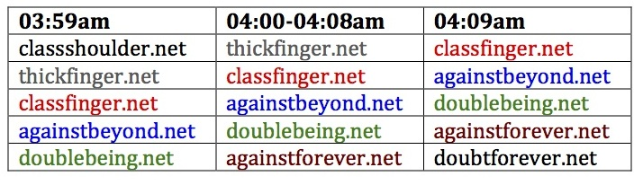

Malware with a Personal Touch
by Casey Gately
Over the summer, a friend sent me some malware samples that immediately grabbed my attention. The malware was intriguing because the literal file name of each binary was named after a person or a user ID (for example, bob.exe, bjones.exe, bob_jones.exe, etc). Cool, I thought at first – but after some more detailed analysis, I realized that the malware actually contained hard coded user information, implying that each binary was crafted to target that particular user. Unlike more prominent instances of malware, these samples contained binaries specifically aimed at a pre-generated list of email addresses. No longer is malware targeting only randomized email addresses - this sample indicates a different variety of malware that has a more “personal touch”.
After digging around a bit, it became apparent that this type of malware has been around for a while. Malware of this type was actually circulating during early 2013, but recent open source research revealed there was also a malicious Facebook campaign earlier this year, in May 2014, that delivered similar malware. In the 2014 reports I read, the malware contained embedded clear text bible scripture, but while the samples I received from my friend didn’t contain any bible scripture, there were enough similarities (such as obfuscation techniques and reach back communications) that suggest my variants may have been from the same campaign. In typical phishing fashion, the May campaign began with an email like this:
So it’s been around for a little while and there are some other excellent analytical reports on this piece of malware - some of which delve more into the math behind the malware, which is quite interesting. However, in this post, I’ll be focusing on the personalized nature of the malware, which sets it apart from many I have previously analyzed.
Regardless of the malware genesis, what really amazes me is the number of people who will receive an email, download the zip file, then open it using the password provided. They then inadvertently run the malware and receive a fake MessageBox notification created by the malware. This means that while the user probably thought everything was okay, behind the scenes the malware was off and running. Similar to other types of malware, the binaries are triggered by user behavior and continue to run unbeknownst to the infected user. However, unlike many other types, this sample truly contained a personal touch – leveraging social engineering to fool the user that the malware was truly a personalized, benign message. The following section provides a technical walk-through of the various aspects of the malware.
Malware Execution: A Step by Step Overview
Upon execution, the affected user will see an error MessageBox with the following:
This would probably lead the unsuspecting user to think the program didn’t work, and there’s a good chance the user would just go about their business. If so, they would never realize their computer had just been compromised, and the seemingly innocent MessageBox would have been the only visual sign of something gone awry.
Now let’s take a closer look at the malware’s footprint on a victim host. It self-replicates to two binaries, both located in a malware-spawned folder within the affected users %AppData% folder. The name of the malware folder and the names of the self-replicated binaries are decoded during run time. What’s interesting about this is that while their naming conventions appear random, they were actually static and quite unique to that particular binary. The names of the folder and each binary are hardcoded, but obfuscated, within the binary. In other words, the malware file structure will be the same each time it is run. Pasted below are three different examples that illustrate this. Note: The literal file names have been intentionally changed to protect the identity of the affected users.
At first glance, this file structure reminded me of several ZeuS 2.1 and ZeuS-Licat variants I analyzed several years back, but the ZeuS file structure was not static in any way.
The communication flow looks like this. Within the span of 16 seconds, the infected host will connect out to 85 different domains, each with the same GET request.
Immediately, a pattern of anomalies can be seen regarding the reach back domains. Like children’s mix and match clothing, the reach back domains are mixed and matched combinations consisting of two English words. Subsequent reversing revealed the malware binary contained an obfuscated list of 384 words, ranging from 6 to 12 letters as follows:
6 letter words = 97
7 letter words = 152
8 letter words = 82
9 letter words = 38
10 letter words = 10
11 letter words = 4
12 letter words = 1
The reach back domains are dynamically generated using a Domain Generation Algorithm (DGA) to merge two of the 384 words together into a single domain name with the “.net” top level domain (TLD). The infected host will connect out to 85 domains, and the list of 85 domains will remain constant for 8:32 minutes, meaning that if the malware is restarted during the same 8 and a half minute period, the same domains would be requested.
For demonstration purposes, if the malware was run at 3:59am on 16 Sep, the domain generation will begin with classshoulder.net, followed by thickfinger.net, etc. (as shown above for connections 1-4). At 4:00am, however, the first domain requested will be thickfinger.net, followed by classfinger.net. Eight minutes later, at 4:09am, the first domain will be classfinger.net, followed by againstbeyond.net. This means that domains 2-85 at 4:00am are identical to domains 1-84 from 3:59am. Below is a representation of the first five domains used between 03:59 and 04:09 AM on 16 September, where the first domain can be seen dropping off after 8 minutes.

Referring back to the four connections above, you can see the affected user’s email address is contained within the outbound “GET” via port 80. This too was hardcoded, but obfuscated within the binary and decoded during run time. In essence, this means each binary was crafted for that particular user. Another interesting aspect is that of the variants examined, the domain name list and the affected user information were encoded with different keys.
Now let’s take a quick peek at the malware in action. Once executed, both self-replicated binaries are running processes as shown below:
What really intrigued me about this was that these are bit-for-bit copies of each other, and despite this, they are hooked to one another shown above. This seemed quite odd, but diving in a little deeper revealed a more interesting side of the story. Basically the first spawned process (ovwcntv.exe) is the primary running process and the second spawned process (ctrdyelvupa.exe) is a slave process, but more on that later. For now, let’s check out a brief chronological snippet of the malware and its spawned processes during run time.
Notice how the original binary (person1.exe) wrote the first copy (ovwcntv.exe) to disk, then spawned its process. Yet ovwcntv.exe was the binary that wrote the second copy (ctrdyelvupa.exe) to disk, subsequently spawning the ctrdyelvupa.exe process. This daisy chain actually acts as a persistency mechanism.
The original binary (person1.exe) is launched via a command line argument. Once running, the binary decodes a string equating to “WATCHDOGPROC”, which the running process looks for. If the “WATCHDOGPROC” string is part of the same command line string as the path for either binary, that particular process is launched. If the “WATCHDOGPROC” string isn’t contained within the same command line string as the binary path, the running process will not launch the additional process. Below are stack excerpts to help demonstrate this.
Will launch:
ASCII "WATCHDOGPROC "C:\Documents and Settings\user\Application Data\nripohbdhnewia\ovwcntv.exe""Won’t launch:
ASCII "WATCHDOGPROC"
ASCII "C:\Documents and Settings\user\Application Data\nripohbdhnewia\ovwcntv.exe"As stated above, the ovwcntv.exe binary is the active running process while ctrdyelvupa.exe acts as a safeguarding (or slave) process. Using the WATCHDOGPROC procedure, if ovwcntv.exe is terminated, ctrdyelvupa.exe immediately restarts it. If ctrdyelvupa.exe is terminated, ovwcntv.exe will restart it as well.
WATCHDOGPROC, in its encoded form, is a 13-byte block embedded in the original binary at offset 00022990. During run time, those bytes are used to populate the ECX register. Each byte is then XOR decoded with the first 13 bytes contained in the EAX register, resulting in the ASCII string “WATCHDOGPROC”. This is demonstrated below.
My initial interest in this particular piece of malware, however, was the hardcoded user’s email information that was obfuscated within the binary. I was equally interested in the word list used by the DGA. I wanted to find their embedded location inside the original binary. It was bit of a trek to get there, but persistence paid off in the end. So let’s begin with the encoded user information.
Within the person1.exe binary, the encoded email address was located at offset 00023611, preceded by the encoded uri string (at offset 00023600).
During runtime, this data block was stored in the ESI register as shown below:
Additionally, a similarly sized block of data was dynamically generated and stored in EAX as shown below. In essence, this was the decoding key.
Each byte of ESI and EAX were then run through the following incremental XOR loop…
…producing the decoded URI which included the victim user’s email address as shown below.
XOR EXAMPLE
40 XOR 6F = 2F (‘/‘)
6F XOR 09 = 66 (‘f’)
6F XOR 00 = 6F (‘o’)
56 XOR 24 = 72 (‘r’)
Note: once I isolated the user data (or email address) within the original binary, along with its key, I patched the binary so it would reflect ‘nottherealuser’ vice the name of the actual victim user. This patched binary was then used to obtain the previous examples.
Next, let’s look at the domain name generation. It followed the same scheme as above. A 2800-byte block of hardcoded data from the original binary was stored in ESI. Then an equally sized block of data was dynamically generated and stored in EAX. These two data blocks were run through the same XOR loop producing a list of 384 words. To demonstrate this, the first 48 bytes of the applicable registers are shown below.
XOR EXAMPLE
FB XOR 91 = 6A (‘j‘)
4A XOR 25 = 6F (‘o’)
0A XOR 7F = 75 (‘u’)
30 XOR 42 = 72 (‘r’)
4C XOR 22 = 6E (‘n’)
3F XOR 5A = 65 (‘e’)
46 XOR 3F = 79 (‘y’)
The interesting part about this binary was that while it appeared packed, it wasn’t. Just about everything within the binary (API calls, strings, etc.) was obfuscated and decoded on the fly during run time as needed. Also, it didn’t debug on its own freewill. This became apparent while stepping through the binary and hitting a point where EIP was set to 00000000. To overcome this, the binary was patched at that particular offset by changing the opcode to a jump (EB FE) so that it would loop back to itself during run time. The patched binary was then saved and executed again, causing it to run in an infinite loop. While running, a debugger was attached to the binary. The jump opcode (EB FE) was then changed back to its original opcode (FF 15 in this case) at which time the intended location of that call (address 00409C50) appeared as can be seen in the following debugger excerpt:
At this point, the binary was patched with a call to the newly identified offset by replacing “CALL DWORD PTR DS:[42774C]” (shown above) with “CALL 409C50”. After this, the binary was saved to a new binary (e.g. binary1.exe).
Next, binary1.exe was loaded into a debugger and a break point was set for CreateProcessA. The binary was then run which generated the first copy of the original binary (in this case ovwcntv.exe), but for simplicity’s sake, we’ll call this binary2.exe.
Binary2.exe was then loaded into a debugger and as we did previously, the opcode at the initial point of user code (E8 48 in this case) was changed to EB FE, changing the initial command from CALL to JMP, as follows:
to
Binary2.exe was then saved as itself, overwriting the original binary2.exe. It also created a backup copy (.bak), which was deleted. Then the debugger was closed.
After this, a debugger was reopened, but it wasn’t attached to anything just yet. Returning to the still-opened debugger for binary1.exe, Alt F9 was pressed in order to execute the binary til user code. This caused binary2.exe to run in a loop (due to the aforementioned patch). The newly opened debugger was then attached to binary2.exe, opening the binary in the ntdll module. From the debugger for binary2.exe, Alt F9 was pressed in order to run it til user code. At this point, the opcode EB FE was changed back to its original opcode (in this case E8 48). A breakpoint was then placed for LoadLibraryA and the binary was run again. Stepping through the binary back into the user code led to all the deobufuscation discussed earlier.
Lastly, below is the complete list of words used for the creation of reach back domains, in order of the lists creation (reading left to right):